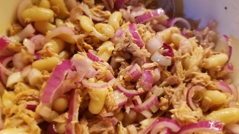

Home
Tuna Beans

Description
This is a version of the Beans and Tuna Salad from Hazan's Essentials of Classic Italian Cooking. This dish is especially good for college students who want to eat cheaply.
It is also very easy to modify to your liking. Consider these ingredient amounts a starting point.
Ingredients
- 3 cups canned cannellini beans, drained
- 1/2 medium onion, preferably sweet, sliced quite thin
- Salt
- 1 seven-ounce can of tuna packed in olive oil
- Extra virgin olive oil
- Red wine vinegar
- Black pepper
Steps
- Place the beans and onions into a serving bowl. Sprinkle liberally with salt and toss.
- Drain the tuna and add it to the bowl, breaking it into flakes with a fork.
- Add enough olive oil to coat well. Add a dash of vinegar and a generous amount of pepper.
- Toss thoroughly, turning the ingredients over several times.
- Taste and correct for seasoning. Eat at once.